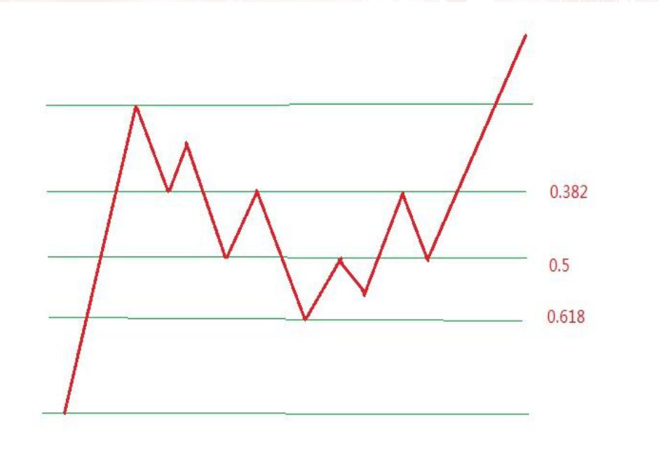
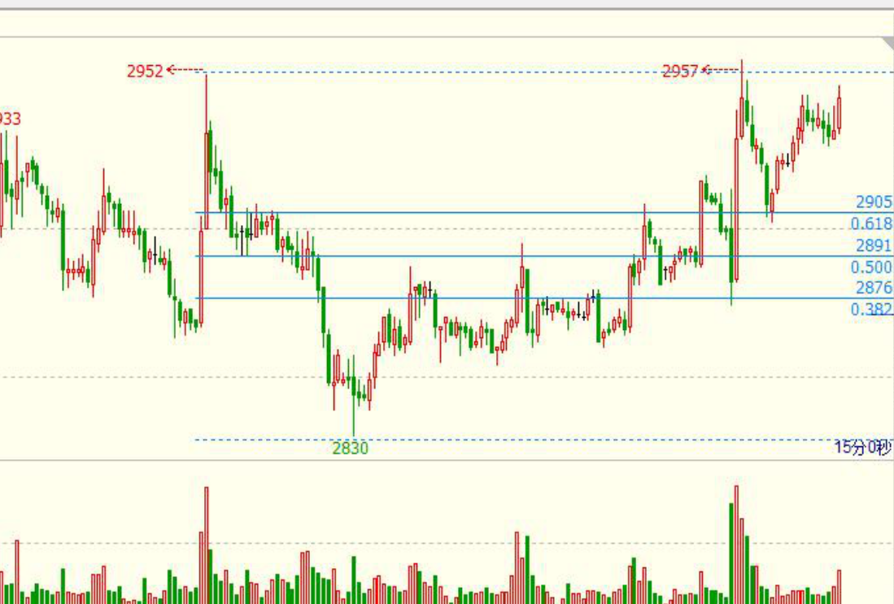
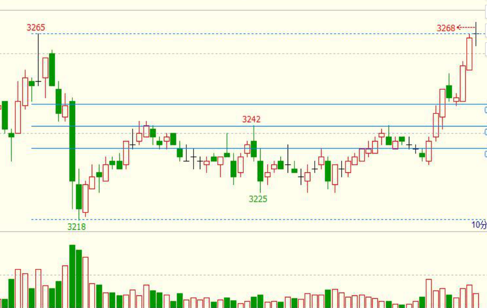
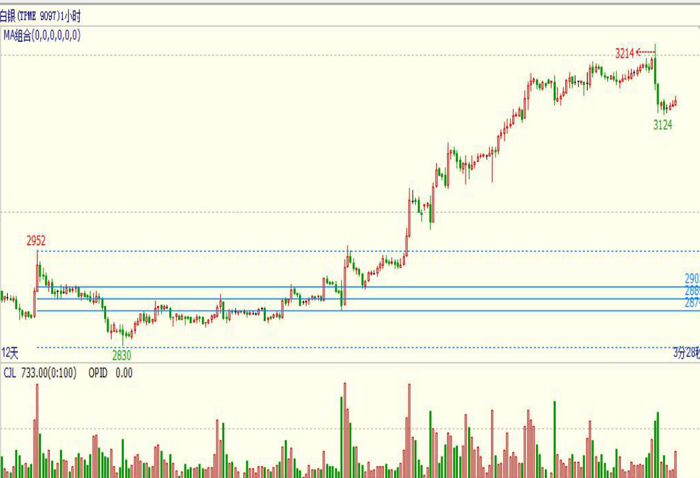
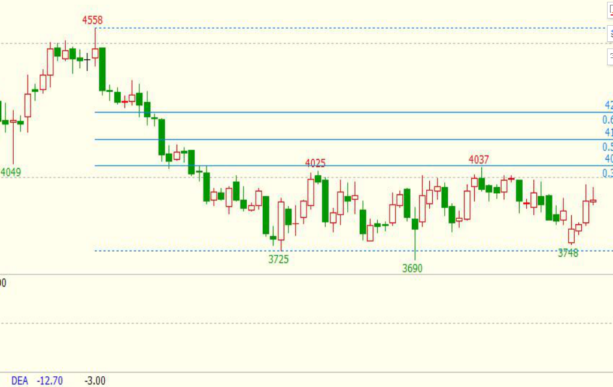

黄金分割实战用法
主讲：李柳一、黄金分割的由来
二、怎么画黄金分割线
三、黄金分割线的作用
四、黄金分割线实战运用
黄金分割的由来
黄金分割线是一种古老的数学方法。黄金分割的创始人是古希腊的毕达哥拉斯，他在当时十分有限的科学条件下大胆断言：
一条线段的某一部分与另一部分之比，如果正好等于另一部分同整个线段的比即0.618，那么，这样比例会给人一种美感。后来，这一神奇的比例关系被古希腊著名哲学家、美学家柏拉图誉为“黄金分割律”。黄金分割线的神奇和魔力，在数学界上还没有明确定论，但它屡屡在实际中发挥着意想不到的作用。
埃及金字塔地面边长与高的比都接近0.618

怎么画黄金分割线
1、一个周期内一波完整的上涨或下跌行情，找出最高与最低点相连。
2、用最近的一波相反的行情验证，验证次数越多越管用。
黄金分割的作用
1、 判断价格的回调支撑区和反弹压力区

2 、是利用银价回调和反弹的幅度来预测趋势

3 、黄金分割的几个主要数字0.191 、 0.382、 0.5 、0.618、 0.809最重要的就是0.382 0.5 0.618
黄金分割线实战
运用黄金分割线来判断价格的支撑和压力就是利用不同黄金分割线之间的距离，将价格的上升和下降行情，划分为几个回调支撑点和反弹压力点，借以判断价格未来的运行趋势。
15分钟日内小级别盘整行情


日线级别震荡盘整行情

总结
1、0.5很重要，是重要的强弱分水岭。
2、一波反弹的行情站上0.618可以初步确认为弱势反弹，站上0.382是强势反弹，进入0.382-0.618之间震荡区，压力支撑作用明显。回调行情反之。
-
1
-
2
-
3
-
4
-
5
-
返回战法列表